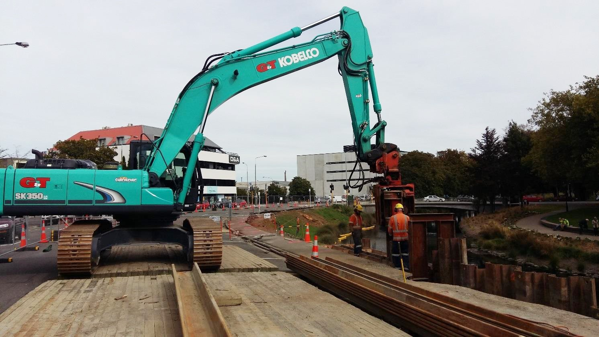
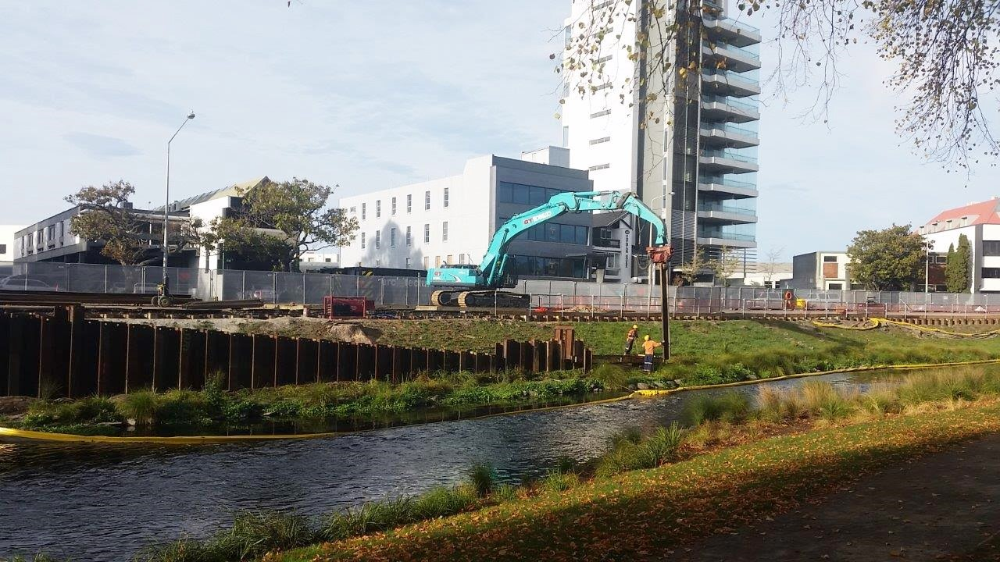
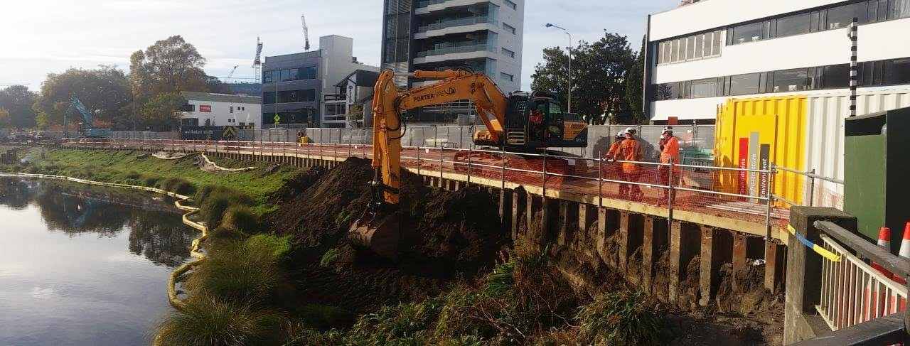

Construction of the Canterbury Earthquake National Memorial
Work on site of the Canterbury Earthquake National Memorial is under way.
Dela na lokaciji Nacionalnega spomenika canterburyjskega potresa potekajo.

Work on site of the Canterbury Earthquake National Memorial is under way. Ground excavation is currently being done after sheet piles were put in place.
Dela na lokaciji Nacionalnega spomenika canterburyjskega potresa potekajo. Zdaj potekajo izkopavanja potem ko so bile postavljene talne pilotne.
Work was completed on the north bank of the Memorial site in time for the 5 year anniversary. The Canterbury Earthquake National Memorial on the banks of the Otakaro/Avon River in Christchurch, New Zealand, will provide a space for people to reflect on the devastating events that changed Canterbury forever, it will honour those who lost their lives on 22 February 2011, and acknowledge the shared trauma and support received with the recovery operation that followed.
Dela so bila koncana na severnem bregu lokacije spomenika pravocasno za peto obletnico. Nacionalni spomenik canterburyjskega potresa na bregovih reke Otakaro/Avon v Christchurchu, Nova Zelandija, bo nudil prostor za razmišljanje o unicujocih dogodkih, ki so za vedno spremenili Canterbury, castil bo tiste, ki so izgubili življenja 22. februarja 2011, in priznal skupno travmo in podporo, prejeto pri reševalni operaciji, ki je sledila.
The entire memorial will be completed in time for the commemorations on 22 February 2017.
Celoten spomenik bo dokoncan pravocasno za komemoracije 22. februarja 2017.

